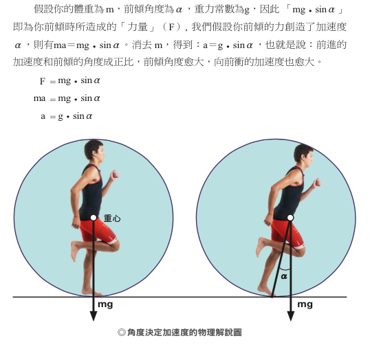
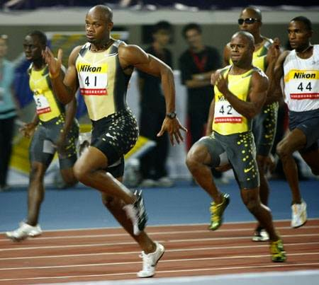

← 回部落格
跑步迷思：摩擦力是向前跑的推動力？
這幾天在上海的分享，不少人問到所謂的「腳掌扒地」的跑法，今天在上海世紀公園有某位小姐很激動說：「田徑場上的教練教的是腳掌落地後用力往後扒，利用磨擦力與肌力向前進。」
博士反問這些人說：「你有辦法在冰上用扒地往後跑嗎？」
她說：「應該不行…」
博士說：「不是應該，是絕不可能。」
博士接著問：「那你覺得在冰上可以跑步前進嗎？」
她說：「不可能吧」
博士說：「當然可以，只要有重力，就有體重，只要有體重與支撐你就能向前跑。磨擦力並非你向前跑的原因，而是地心引力。」
下面為尼可拉斯．羅曼諾夫博士親身示範冰上的姿勢跑法。
博士說：「在冰上跑最能練到技術，只要你一向前跨步、推蹬、扒地，就會跌倒。在冰上你的腳掌必須剛好落在重心正下方才行，不然就會摔得很慘！」
博士每次演講都會引用老子和莊子的哲學核心：「順應自然」。他說科學就是從自然中發現真理，移動的真理就是重力，沒有重力就無法移動，所以他一再地提到：「不要用肌肉跑步，肌肉只是用來支撐體重與利用重力的工具。是重力使你移動，而非肌肉。」
文章在臉書上發表後，陸續有人問了一些問題，也順道整理於此：
- 臉書上相關問題：「其實有疑問很久了……姿勢跑法是歸結出來的，方法是有效的，但是博士的原理解釋難道就一定是對的？地心引力是向下的，一定有個水平的推力人才能前進。換句話說：摩擦力很重要，姿勢跑法是很有效率的跑法，但依然無法超越物理法則。」
- 我的回答：地心引力是垂直力沒錯，但你可以想一下，垂直力還是可以帶來水平移動，思考一下坡道上的球是如何向前滾？因為有坡度，有角度就會帶來水平分力。前傾角度也是同樣的道理，帶領我們前進的是地心引力與前傾角度，Nothing Else。我引用自己書中的一個解說片段，見附圖。（《挑戰自我的鐵人三項》頁 49）

博士每次演講都會引用老子和莊子的哲學核心：順應自然。他說科學就是從自然中發現真理。這點並沒有「超越物理法則」，反而是「順應自然法則」。
- 臉書上相關問題：「最近有個問題困擾我很久...有些菁英跑者的步幅可以達到 1.6m（甚至更大），可是如果考量身高，再用前頃角度來解釋，用三角函數的概念，可能到整個人快趴在地上才有辦法到 1.6m 的位移，不知道我的想法哪裡有錯？可以幫忙解答一下嗎？」
- 我的問答：步幅取決於「前傾角度」和「腳掌拉起的高度」，當然後者跟身高有關，身高愈高的人腳掌能拉起的高度愈高，可以想像一下台北的平板公車，如果車子時速都是 10 公里，你站在離地較高的車門邊往下跳，移動的距離會比較遠→因為慣性。但另一種情況是時速增加到時速 20 公里，從同樣的高度跳下去，移動的距離也會增加。慣性，是使同樣身高與腿長的人跑出更大步幅的原因。但重點是：步幅是前傾角度的結果，不是我們要追求的（也無法主動追求），我們想加速時應該主動追求的是前傾角度，那是利用重力前進的根本。
- 臉書上相關問題：「個人自行摸索姿勢跑法後發現，每個腳趾跟的尤其是拇指跟(應該就是我每次落地的部分)都會痛，且腓腸肌也會有一定程度的不舒適，請問如何克服這二個問題呢?」
- 我的回答：１、最重要的是「不要踮腳跑」，讓腳掌自由落下，所以腳掌前面會先著地沒錯，但接著腳跟也會輕輕觸地。很多人都會誤會成踮著腳尖跑，這是錯的。腳踝應該放鬆，讓它「自由落下」，像任何自由落體一樣。踮腳不是自然，是你用小腿肌在阻礙落下的動作，那小腿當然會不適，甚至會受傷。２、步頻拉到至少 180bpm，才能有效利用到小腿與阿基里斯腱的彈力，不然你只是在用小腿阻撐落下的衝擊（請參考這篇：http://rocky549.blogspot.tw/2015/03/blog-post_5.html）３、剛開始練習時腳掌不要拉太高，拉得愈高，落得愈重。
- 臉書上相關問題：「步頻 180 這個數字是最理想的嗎？若是原本就習慣 190 的步頻有需要調低到 180 嗎﹗」
- 我的問答：關於這點，我也請教過博士，他說：最少 180，慢跑時最少要達到 180，之後隨著速度提高而增加。低於 180 無法有效利用肌肉與肌腱的彈力。所以目前 190，會比 180 更好。
- 臉書上相關問題：「請問徐老師這樣的跑法對於體重較重的人或是一般跑者，膝蓋負擔會不會較大？」
- 我的回答：膝蓋的傷害幾乎來自於過度跨步（腳掌跨到臀部前方），這並不是主觀意見，是科學研究的結果。所以當你的腳掌落到臀部下方，膝蓋處既沒有剪應力，也沒有剎車，同時減少支撐期。傷害當然降低。因為傷害只發生在支撐期，腳掌向前跨得愈多，支撐期愈長，傷害當然愈大。所以姿勢跑法強調盡量減少支撐期，傷害當然是降低的。因為你在騰空時是不會受傷的。對體重重的人也是一樣。結論是：腳掌落下時愈靠近臀部，膝蓋負擔愈小；腳掌愈往前跨，愈容易毀掉你的膝蓋。不管是那一種類型的跑者都一樣，這是研究結果，不是博士或我的主觀意見。
- 臉書上相關問題：「自己短跑的經驗是後腿會踢到屁股、步距盡量拉大 （就如您說的短跑的角度和幅度不同），但是重心較前傾，爬地、後蹬的貢獻似乎也很大，所以在思考是否短跑無法套用～ 」
- 我的回答：了解你思考的點了！我們可以再思考看看，重心較前傾時，身體已經在往前衝了，其實我們往後是推／爬不到東西的，就像身體後仰的拳擊手是無法揮出重拳一樣。愈後仰，向前揮出的拳愈輕，所以向前傾愈多，向後推蹬和爬地也愈不可能。在衝刺時貢獻最大的是靜摩擦力，因為身體前傾角度很大時，支撐腳要夠穩才行（所以在冰上很難「加速」）。因此釘鞋的目的是在增加支撐時的靜摩擦力，而不是在讓自己後扒或推蹬。（附圖為 Asafa 的衝刺照片，後方選手刻意抬膝與推蹬，是多餘的動作）


徐國峰・KFCS 耐力訓練系統
看更多文章 →